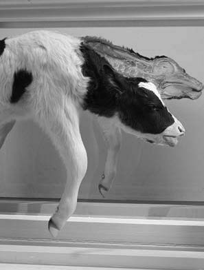

TEXTO I
 HIRST, D. Mother and Child. Bezerro dividido em duas partes: 1029 x 1689 x 625mm, 1993 (detalhe). Vidro, aço pintado, silicone, acrílico, monofilamento, aço inoxidável, bezerro e solução de formaldeído.TEXTO II
O grupo Jovens Artistas Britânicos (YABs), que surgiu no final da década de 1980, possui obras diversificadas que incluem fotografias, instalações, pinturas e carcaças desmembradas. O trabalho desses artistas chamou a atenção no final do período da recessão, por utilizar materiais incomuns, como esterco de elefantes, sangue e legumes, o que expressava os detritos da vida e uma atmosfera de niilismo, temperada por um humor mordaz.
Disponível em: http://damienhirst.com. Acesso em: 15 jul. 2015. FARTHING, S. Tudo sobre arte. Rio de Janeiro: Sextante, 2011 (adaptado).A provocação desse grupo gera um debate em torno da obra de arte pelo(a)